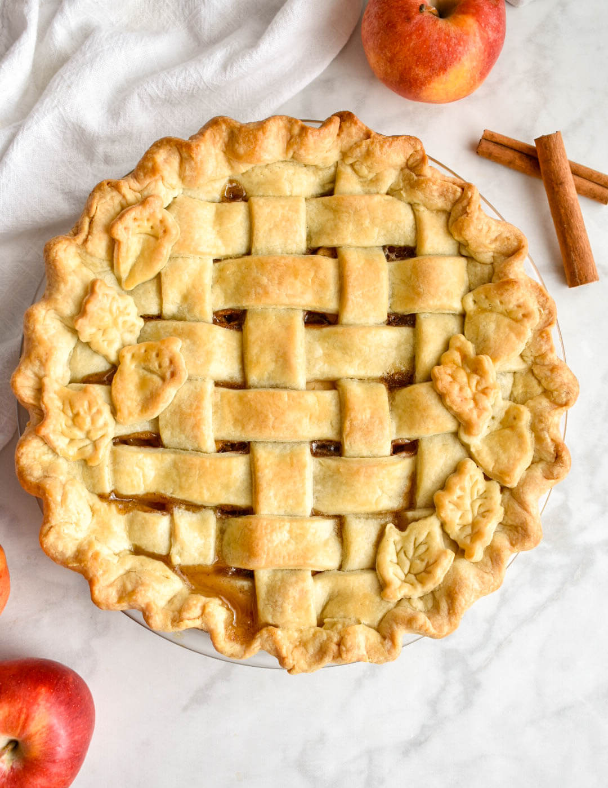

Apple Pie

Description
Apple pies are probably the most popular pie,
especially here in the United States.
It is my personal favorite pie, and likely
is for many others. Down below, are the ingredients
needed and the steps to make this great desert.
Ingredients
- Apples
- Butter
- Flour
- White and/or Brown Sugar
- Pie pastry
Steps
- Melt butter over medium heat, then add flour and stir for 1-2 minutes
- Add sugar and water to the mix and bring the a boil, then reduce to low for 3-5 minutes
- Press pastry into a pie pan and roll out other pastry to overhang the pie
- Place sliced apples into pastry and use rolled out pastry strips over the top of them
- After creating the lattice crust, pour sugar-butter mixture over it making sure it seeps to the apples
- Bake in preheated oven for 15 minutes at 425 degrees F, then reduce to 350 degrees F for 35-45 minutes
- Enjoy your meal!